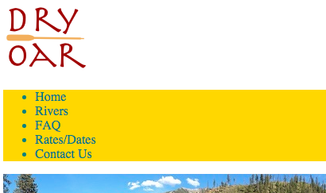

Adding More HTML
Activity Directions
Estimated time: 45 minutes
This week we will continue with the webpage we started in the previous activities. Open up the index.html file from last week in your editor to begin.
Step 01
First review the wireframe again to help remember what we are trying to do. Notice that there are still more elements on the page that are related and grouped. On this wireframe I added additional red boxes to help to see the rest of those relationships. Let's finish boxing up the related content groups now.
When you are done you should have an HTML element on your page for each red box on the wireframe image (you looked at it right?), plus those that you added last week. These elements could be <div>s, <section>s, a<header> might be nice, or even a <footer>. When you are done there should not be any content that is not contained in a 'box' (see example below). Remember to use semantic elements whenever possible (those that show meaning) and save <div> for those things that don't easily fit in one of the semantic boxes.
Note
Adding these grouping tags will not make your page look like the wireframe. We are laying a foundation, but have not learned how to position elements yet. Don't worry if your page does not look like the wireframe at this point.
As you have added the 'boxes' around the content on your page have you noticed any changes? Things should have shifted around a bit. There are two basic types of HTML elements: Block and Inline.
Block elements are greedy. By default they take up 100% of the space they have available, meaning they will not allow any other element to share the line they are on...thus forcing line breaks around themselves. Most of the semantic elements we use for grouping related content fall into the block category, as well as <h1> - <h6>, <p>, <div>, <ul>, and <li>.
Inline elements like to share. They will allow as many other elements to share the line they are on until it is full...then they wrap. Some examples of inline elements are <a>, <img>, <span>, <strong>and plain text
The default block or inline behavior of a tag can be changed with the CSS display property.
Take a moment to consider why it looks this way? Why is the list of links down below the logo? Why does each link show on it's own line? Most importantly, the wireframe shows the links on the same line as the logo and each link in the same line as each other, how can we make them do that?The top of your page should look something like this:
(I'm not going to give you the answer to this right now, and you won't be graded on it...yet. But think about it and maybe experiment :) )
Step 02
Let's add one more box to our content. For this one we will use a <div> and we want the whole page to be inside of it. Place your opening <div> right after the opening <body> tag and the closing </div> right before the closing </body>. Add an id of content to the <div>.
Right now the paragraphs of text on our site can stretch out as far as the browser is wide. On very wide screens that can leave things very thin and not very attractive. We should use the widthproperty to fix this.
Where do we apply the width however? We could apply it to all <p> tags, but what if we have a paragraph that needs to be wider or more narrow than what we choose? We could make a class and apply it to all <p> elements individually, and that would work, but there is an easier way.
Step 03
Apply a width to your whole page to keep it from stretching across the whole browser window by making a css rule for the div we added in the last step with the id of content. In that rule let's set the width of the page to 960px. doing it on that <div> will make sure that no element on the page can be wider that than.
Centering
We set the width, but the page still doesn't look right. It would look better if it were centered instead of left aligned. Centering with CSS is not hard, but can be confusing. This is because block and inline elements are centered differently. Block elements are centered by setting a width and adjusting the left and right margin (Margin is the space between elements on a page, or between the element and the edge of the browser window). Inline elements are centered by using the text-align property.
Step 04
Let's center our content. The <div> we set the width on is a block element, that means we will need to use margin to center it. The idea is to set a width (we did this in the last step) Then tell the browser to take whatever margin is available and split it between the left and right of the element. This is a lot easier than it sounds. Add margin: 0 auto; to the CSS rule for #content. We gave it 2 values. The first says to set the top and bottom margins to 0 and the second says to set the left and right margins to auto: meaning to split any margin available between the left and right.
Step 05
While we are centering let's try an inline element now. On the wireframe the bottom section text is centered. Apply the text-align: center; style to the bottom section (you should have placed that headline and paragraph in a box earlier). Add a class or id to that box with a meaningful name and use that to apply the style.
Links
Step 06
We added some text in an unordered list last week to be used as links. Right now they are just text, lets fix that. Turn each item in the list into a link by wrapping just the text (not the <li>!) in an <a> tag. The <a>tag has one required attribute if you recall from Khan Academy: href="". This is where we tell the browser where the link should take us to. These will all be other pages on our site, but they don't exist yet. Let's just putindex.html in there for now. That way the link will work if it's clicked on. We will replace those with actual pages as we build them.
Each list item should look something like this: <li><a href="index.html">Home</a></li>
Take a look at your page. Pay particular attention to our new links. Last week you should have added some CSS to change the color of the font for those links. Your carefully chosen color is probably now blue or purple! CSS stands for Cascading Style Sheets. the Cascading part means that you can have more than one set of styles apply to an element, and that they will cascade down with the rules closest to the element taking precedence.
We applied a color change at the <nav> level, but <a> tags have some default styling as well and the<a> is closer to the text we want styled than the <nav> is so those styles override ours. If we want the links to change back to the color we chose we will need to move our rule closer...override the default styling of the <a> itself most likely. W3Schools has some more info on the idea of cascading.
If you recall from the Khan academy lesson from this week links can be used to travel to different pages on the same site, to pages on a different site, and even to different places on the same web page.
It is often considered a good practice if you have a link that takes you away from the current site to have it open in a new window or tab. This can be done with the target="_blank" attribute.
Step 07
Lets add some external links to social media to our site. Khan Academy taught this week that more than just text can be used to create links. In this case it would be appropriate to make an image the link instead.
Here a some icons (images) for some common social media sites that you can use for this next step. Or you can go find some of your own.


Select 3 social media sites and create a link to them in the footer of your page using an image. Make sure the link opens in a new window/tab.
When we added images before we found the URL of the image (right click, copy image address) and used that. In this case it would be better to download the image to our computer and then upload it to our host as part of the site.
If you right click on any of the images above you will see an option "Save image as..." Do that. Browse to the folder on your hard drive where you are storing your site. Save the image file in the same directory as your index.html file.
To use it in your site you will now just need something like this as your src src="facebook.png".
Step 08
Open your website into your browser to make sure the web page displays correctly. Pay special attention to whether your images are all displaying. Once verified, submit the URL for your page to iLearn by going to the next page to access “W06.04 Adding more HTML” and click “Upload.”
If you uploaded your updated index.html to your host and your changes don't show when you browse there your browser might be caching your page. Caching is when a browser holds a copy of a site you visit in memory so that next time you visit it will load very fast. Sometimes caching backfires though, on sites that change often, and your browser shows you an old version. Hitting the Refresh button on your browser will often force it to get a fresh copy. If that doesn't work you may have to empty your browser cache. Google can point you to walkthroughs for just about any browser on how to do this.
Also, if you have not done so recently make sure to backup your site! (In Handcraft goto Projects, then click on the gear icon on your project for the class, then "Export as .zip"
Grading
This activity will be graded using the following rubric:
- Structural HTML tags added to group elements as shown in the wireframe (3 pts)
- Links added for the navigation and social icons. (The links in the navigation can link to the index.html page or #, since we haven't created the other pages yet. The social links should work and link to somewhere though.) (4 pts)
- Examples of centering of text (inline elements) and boxes (block elements) shown on the page. (2 pts)
- The HTML is well formed and without errors. (1 pt)